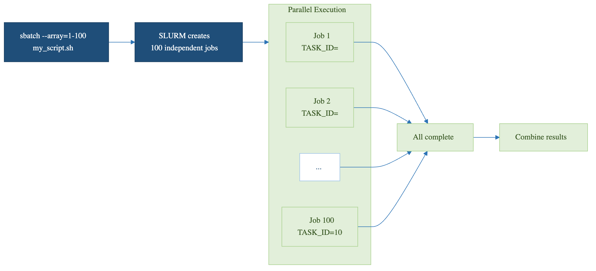

SLURM Job Arrays
Last updated on 2026-08-27 | Edit this page
Estimated time: 45 minutes
Overview
Questions
- How do I submit many jobs at once with SLURM?
- What is SLURM_ARRAY_TASK_ID and how do I use it?
- How do I map array indices to my parameters?
- How do I avoid hammering SLURM with thousands of tiny tasks?
Objectives
- Understand SLURM job arrays and the –array flag
- Use SLURM environment variables to differentiate tasks
- Map array indices to parameters efficiently
- Monitor and manage job arrays as a unit
- Choose the right granularity for array tasks
Why Job Arrays
Job arrays are the cleanest way to express “run this script with N
different inputs” to SLURM. They let you submit a thousand parallel jobs
with one sbatch command, monitor them as a group, and
cancel them as a group. Without arrays, you would write a wrapper script
that loops over inputs and submits one job per iteration: harder to
manage, more strain on the scheduler, and no easy way to gather
results.
The pattern works for any embarrassingly parallel workload: parameter sweeps, batch processing of files, Monte Carlo simulations with different seeds, hyperparameter tuning. If your tasks are independent and you need to run many of them, arrays are almost always the right answer.
Job Arrays vs. Loops
Without job arrays (bad):
With job arrays (good):
The wrapper-loop version submits 100 separate jobs, each with its own
job ID and accounting record. The array version submits one job ID with
100 tasks. SLURM handles array dispatch much more efficiently than 100
individual sbatch calls, and you can manage the entire
batch as a single entity.
Basic Syntax
BASH
#!/bin/bash
#SBATCH --job-name=simulation
#SBATCH --array=1-100
#SBATCH --time=01:00:00
#SBATCH --ntasks=1
#SBATCH --cpus-per-task=1
#SBATCH --mem=4G
echo "Running task $SLURM_ARRAY_TASK_ID"
python3 my_script.py --param_set $SLURM_ARRAY_TASK_IDThe --array=1-100 directive tells SLURM to run this same
script 100 times, each invocation seeing a different value of
$SLURM_ARRAY_TASK_ID (1 through 100). Resource directives
like --time and --mem apply per task, not per
array. A 100-task array with --mem=4G total memory
commitment is 400 GB, distributed across nodes as SLURM schedules.
Array Index Variations
BASH
sbatch --array=1-100 script.sh # IDs: 1, 2, ..., 100
sbatch --array=0-100:10 script.sh # IDs: 0, 10, 20, ..., 100
sbatch --array=1,5,10,15,20 script.sh # Explicit list
sbatch --array=1-100%10 script.sh # 100 tasks, max 10 running concurrentlyThe %N modifier is especially useful. Submitting
--array=1-1000%50 runs 1,000 tasks but only 50 at any time,
which is gentler on shared resources and avoids consuming everyone
else’s queue priority.

Practical Examples
Parameter Sweep
BASH
#!/bin/bash
#SBATCH --job-name=ml_sweep
#SBATCH --array=1-100
#SBATCH --time=00:30:00
#SBATCH --mem=4G
LEARNING_RATE=$(sed "${SLURM_ARRAY_TASK_ID}q;d" param_list.txt)
python3 train_model.py \
--learning_rate $LEARNING_RATE \
--output results/model_${SLURM_ARRAY_TASK_ID}.pklThe sed "${N}q;d" file idiom prints just line N from a
file, which is the simplest way to map an array index to a parameter
line in a text file.
Batch File Processing
BASH
#!/bin/bash
#SBATCH --job-name=image_proc
#SBATCH --array=1-100
#SBATCH --cpus-per-task=4
#SBATCH --mem=8G
START=$(( (SLURM_ARRAY_TASK_ID - 1) * 10 ))
END=$(( SLURM_ARRAY_TASK_ID * 10 ))
for i in $(seq $START $((END - 1))); do
python3 analyze_image.py images/image_${i}.tif --output results/analysis_${i}.csv
doneThis processes 1,000 images in 100 array tasks of 10 images each. The “batch within a task” pattern (covered next episode) reduces SLURM scheduling overhead when individual tasks are very fast.
SLURM Environment Variables
BASH
$SLURM_ARRAY_TASK_ID # This task's index
$SLURM_ARRAY_JOB_ID # Master job ID
$SLURM_ARRAY_TASK_MIN # Minimum task ID
$SLURM_ARRAY_TASK_MAX # Maximum task ID
$SLURM_JOB_ID # Individual job ID for this task$SLURM_JOB_ID is unique per task while
$SLURM_ARRAY_JOB_ID is shared across all tasks in the
array. Use $SLURM_ARRAY_JOB_ID if you want all output files
to share a common prefix; use $SLURM_JOB_ID if you want
each task’s output to have a unique number.
Monitoring and Managing
BASH
squeue -j 12345 # View all jobs in array
squeue -j 12345_5 # View specific task
scancel 12345 # Cancel entire array
scancel 12345_5 # Cancel only task 5
scancel 12345_{1-50} # Cancel tasks 1-50
scontrol requeue 12345_5 # Requeue failed taskscontrol requeue is invaluable when one task in a
100-task array fails because of a transient error (a node hiccup, a
temporary file system issue). You can re-submit only that one task
without re-running the other 99.
Dependency Chains
BASH
# Run analysis after all sweep jobs complete
sbatch --dependency=afterok:12345 analyze_results.shA common pattern: array job submits the sweep, dependency job waits for the entire array to finish, then aggregates the results. The aggregation script can iterate over all output files and produce a summary.
Choosing array task granularity
Each SLURM task has overhead: scheduling, container setup, environment activation, module loading. For very fast tasks (under a minute), this overhead can dominate the actual work.
If each task takes seconds: batch 50 to 100 of them into one task that loops internally.
If each task takes minutes to hours: one task per work unit is fine.
If each task takes days: consider checkpointing within the task so a hardware failure does not lose all progress.
A rule of thumb: aim for tasks of at least 5 minutes each. Below that, internal looping pays.
Challenge
Submit Your First Job Array
Create a job array that runs a Monte Carlo pi estimation with 10
different seeds (array 1-10). Each task should save its result to
results/pi_N.txt.
Challenge
Right-Size an Array
You have 5,000 input files to process; each takes about 30 seconds.
Should you submit --array=1-5000, or batch them? Justify
your choice.
Batch them. 5,000 tasks of 30 seconds each have an unfavorable ratio
of SLURM overhead to actual work. A reasonable design:
--array=1-50%20, where each task processes 100 files in a
loop. That gives 50 tasks of about 50 minutes each, throttled to 20
concurrent. SLURM scheduling overhead becomes negligible, and you stay
polite by not consuming 5,000 queue slots at once.
- SLURM job arrays submit many similar jobs with one command
- Each task gets a unique SLURM_ARRAY_TASK_ID
- Map array indices to parameters and data files
- Save results with unique filenames based on task ID
- Monitor and manage entire arrays with a single job ID
- Use
--array=1-1000%50to throttle concurrency on shared clusters - Aim for tasks of at least 5 minutes; batch internally if shorter
-
scontrol requeuere-runs only failed tasks without redoing the rest